5 De energiemix
Het voorbereidende werk is achter de rug, nu is het hoog tijd een energiemix te gaan samenstellen. Het doel van dit hoofdstuk is te onderzoeken hoe betrouwbare energielevering mogelijk wordt met duurzame bronnen. Variabele energiebronnen vertonen uitval, dat is de aard van de bron. De uitval moet op een of andere manier gecompenseerd worden. Continue energiebronnen, zoals kolen- en gascentrales, of kerncentrales, kennen deze problematiek niet. Een continue energiebron geeft een betrouwbare energieproductie, zoals we nu zijn gewend op basis van fossiele brandstoffen. Niet-continue bronnen staan in de simulaties centraal, juist omdat die niet in staat zijn permanent energie te leveren. Verdere infrastructuur die wordt gebruikt is daar in de simulaties secundair aan en wordt gebruikt om tekorten te vereffenen.
De bedoeling is niet om de perfecte energiemix te vinden, maar om inzicht te krijgen in de werking daarvan. Inzicht krijgen van het effect van een bepaalde mix van energiebronnen is niet meer op de achterkant van een envelop te doen, zoals het bijvoorbeeld voor spaarbekkens nog wel aardig lukt. De onvoorspelbaarheid van de opbrengst uit zonne- en windenergie is daar een belangrijke oorzaak van. Vooral in het geval van windenergie, waar windsnelheidsverschillen een grote impact hebben op de opbrengst, is een schatting lastig te maken als er niet in detail gekeken wordt. Datzelfde geldt voor het verloop van de pieken en dalen in de opbrengst. Tekorten kunnen zich in de loop van de tijd opstapelen. Het precieze verloop van overschot en tekort is bepalend voor de hoeveelheid opslag, hulpenergiecentrales en andere infrastructuur die nodig is.
Om toch de gevolgen te kunnen bekijken van verschillende samenstellingen van een energiemix, wordt hier gebruik gemaakt van een rekenmodel dat opbrengst en tekort in tijdsstappen van tien minuten berekent. Dat geeft het detail om voor een bepaalde samenstelling van een energiemix te zien wat de gevolgen zijn van de gemaakte keuzes.
Hoe het model werkt, wordt hieronder eerst beschreven. Vervolgens worden er in de rest van het hoofdstuk een aantal vragen uitgewerkt. Iedere vraag behandelt een andere invulling van de energiemix. De simulaties schetsen de gevolgen, volgens het model, van de keuze voor een bepaalde inrichting van de energiemix. Er zijn daarvoor veel scenario’s mogelijk. Hier is gekozen voor een aantal varianten die de wisselwerking tussen de verschillende ingrediënten van een energiemix het beste duidelijk maken en tevens iets zeggen over de schaal van de onderneming.
5.1 Het model
Een energiemix bestaat in het model uit niet-continue bronnen (zon en wind), een vorm van opslag (bijvoorbeeld spaarbekkens, accu’s of waterstof) en een continue bron (zoals ‘schone’ gascentrales of kerncentrales).
Het model gaat ervan uit dat Nederland niet op enig moment zonder energie mag komen te zitten. Het is zodanig ingericht dat eventuele tekorten altijd direct worden vereffend. Zon en wind worden beschouwd als primaire energieleveranciers. Eventuele opslag of hulpbronnen worden pas aangesproken op het moment dat wind en zon niet meer in staat zijn de vraag te dekken.
De simulaties nemen zoals eerder het nationale energieverbruik van 2019 als uitgangspunt (706 TWh). Er wordt aangenomen dat de nationale energievraag constant is. Nederland verbruikt dan continu zo’n 81 GW aan energie. Het vermogen om Nederland aan de praat te houden is 81 GW, de hoeveelheid energie die in een jaar wordt verbruikt is 706 TWh.
De simulaties gaan uit van een constant energieverbruik en dat is natuurlijk een benadering van de werkelijkheid, maar het is zeker niet het slechtste scenario. Stel dat de vraag niet constant is, maar fluctueert. Soms zal het zo zijn dat een windarme periode inderdaad samenvalt met weinig vraag. Er zijn echter ook momenten dat de vraag bovengemiddeld is, hetgeen een groter vermogen vraagt van de energiebron dan bij constante vraag. Het vermogen, en daarmee het aantal windmolens of centrales dat er moet staan, of het aantal accu’s dat wordt gebruikt, neemt toe.
De uitkomsten van het model bieden inzicht in de opbrengstfluctuaties van een bepaalde energiemix en de bijbehorende infrastructuur die nodig is om de vraag sluitend te krijgen. De boekhouding dient daarbij te kloppen. Het model beperkt zich tot de Nederland. Dat is ingegeven door bekendheid met de Nederlandse situatie en door de uitstekende gegevens die voorhanden zijn om opbrengst uit zon en wind fijnmazig te berekenen. Om de balans kloppend te houden wordt er geen energie van buiten gebruikt. Nederland moet zichzelf in het model kunnen redden.
Dit laatste lijkt vreemd. Nederland is verbonden met Europa. Het kan toch zeker geen probleem zijn om energie uit het buitenland te betrekken als dat zo uitkomt? Het energienet is immers met elkaar verbonden. Het probleem daarmee is dat deze bronnen niet in het model verantwoord worden. Het model zou dan moeten worden uitgebreid en heel Europa moeten bevatten. Men weet anders niet of het waaide of de zon scheen bij de buren, of er overcapaciteit voor ons beschikbaar was, of de energie wel duurzaam werd opgewekt en of men bereid was voor ons te investeren in energiecapaciteit. Niet verantwoorde ‘import’ van energie maakt een model onbetrouwbaar.
Figuur 5.1 toont de energiestromen tussen de verschillende onderdelen in het model. Iedere tien minuten wordt het schema doorlopen. Dat begint met het berekenen van de opbrengst uit zon en wind. Er wordt wederom gebruik gemaakt van de gegevenssets van het KNMI aan de hand waarvan de opbrengsten van wind- en zonne-energie per tien minuten worden berekend.

De energievraag wordt gesplitst in een vraag naar elektriciteit en een vraag naar waterstof. Deze verhouding wordt vooraf vastgesteld (bijvoorbeeld 20% van de vraag wordt verbruikt als waterstof en 80% als elektriciteit). Met de opbrengst uit zon en wind wordt eerst geprobeerd aan de elektriciteitsvraag te voldoen. Lukt dat niet, dan wordt energie uit de opslag (O) betrokken. Biedt de opslag ook geen uitkomst, dan neemt het model aan dat er moet worden bijgedraaid door de hulpbron (H). De hulpbron blijft staande bij en is altijd in staat om tekorten op te vangen. Op deze manier zijn vraag en aanbod in balans te krijgen.
Nadat er aan de elektriciteitsvraag is voldaan, komen de afnemers van waterstof aan bod. Met de resterende energie uit de vorige stap wordt waterstof geproduceerd. Mocht er onvoldoende energie zijn overgebleven, dan wordt het energietekort weer aangevuld via opslag of hulpbron.
Bij sommige stappen in het model treden er verliezen op. Dat is bijvoorbeeld zo bij de productie van waterstof uit elektriciteit. Daarbij wordt uitgegaan van een efficiëntieverlies van 20%. Dit gebeurt bij de productie van waterstof uit elektriciteit uit zonne- of windenergie, of uit elektriciteit die afkomstig is van een hulpbron. Bij de productie van elektriciteit uit waterstof wordt er met een verlies van 50% gerekend. Dit is het geval als er uit de waterstofopslag elektriciteit moet worden geproduceerd. Bij gebruik van lithium-accu’s als opslag wordt met 10% verlies gerekend. Levering van elektriciteit door zon, wind of hulpbron aan afnemers van elektriciteit verloopt in het model zonder verlies. Hetzelfde geldt voor compressie van de waterstof voor opslag. Ook transport en levering van waterstof verloopt zonder verliezen.
Alle simulaties gaan ervan uit dat de zonnecellen een efficiëntie hebben van 20%. Windmolens staan opgesteld in een fictief windpark op een onderlinge afstand van 7 wiekdiameters. De windmolens in het park hebben een efficiëntie van 60%. Om de opbrengst van de molens te berekenen wordt de opbrengstkarakteristiek van de Enercon-126 gebruikt.
5.2 Een dag energieopwekking
Figuur 5.2 laat ter illustratie een dag energieopwekking zien met behulp van wind, zon, een hulpbron en opslag. De figuur werd samengesteld aan de hand van windsnelheid en instralingswaarden van het KNMI die voor tijdsvakken van tien minuten beschikbaar zijn. De figuur laat zien hoeveel energie een bepaalde bron op een bepaald moment opwekte. Daarnaast wordt het verloop van de opslag getoond zodat het samenspel tussen fluctuerende bron, opslag en hulpbron zichtbaar wordt.
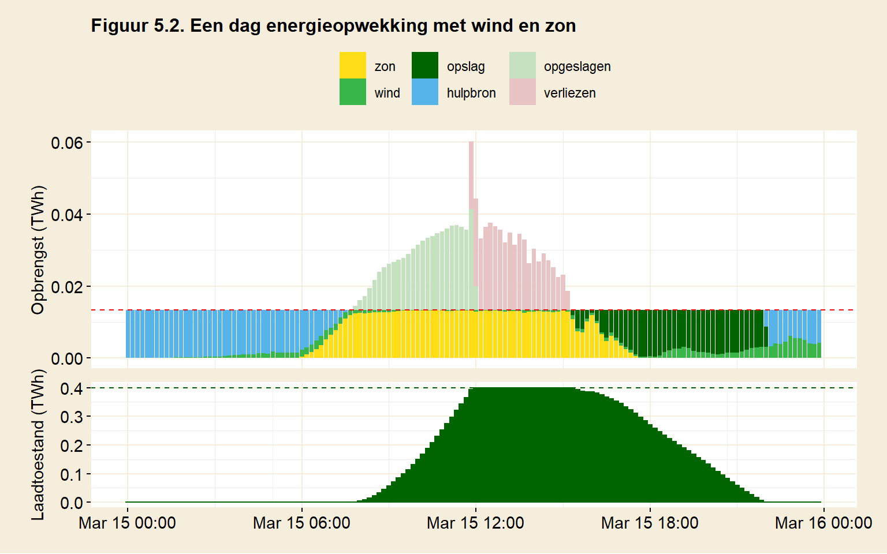
De vroege ochtend begint windstil en uiteraard zonloos. Aan het begin van de dag is de opslag leeg. Dat is te zien aan de laadtoestand, het onderste gedeelte van de figuur. De hulpbron zorgt voor energie, precies genoeg om aan de vraag te voldoen (de rode stippellijn). In de loop van de vroege ochtend steekt er een zwak windje op en vanaf zes uur ’s ochtends komt de zon op. De zon begint energie te leveren en rond een uur of acht is dat zoveel geworden dat de hulpbron kan worden uitgeschakeld. Vervolgens wordt er door wind en zon zelfs meer opgewekt dan nodig, deze energie wordt opgeslagen. Rond een uur of twee ’s middags is de opslag vol, de overproductie kan niet meer worden opgeslagen en blijft onbenut. Dit onbenutte overschot wordt genoteerd als verliezen. Rond vier uur ’s middags is de gecombineerde kracht van zon en wind niet meer voldoende om de vraag te dekken. Nu is er echter energie aanwezig in de opslag. Het tekort wordt onttrokken aan de opslag. Dat is aan de laadtoestand te zien: de hoeveelheid energie in opslag neemt vanaf een uur of vier gestaag af. Rond negenen in de avond is de opslag leeg en neemt de hulpbron de energieproductie over.
5.3 Uitvoer van het model
Het model houdt bij wat de bijdragen zijn geweest van de verschillende energiebronnen. Daarnaast wordt bijgehouden waar er energie werd verloren. De opbrengst uit wind- en zonne-energie (groen en geel in figuur 5.2) aan afnemers, evenals wat de hulpbron (blauw) en opslag (donkergroen) aan afnemers levert, zijn netto bijdragen. Eventueel (efficiëntie)verliezen worden apart bijgehouden. Deze post ‘verliezen’ (rood) is een verzamelpost van efficiëntieverliezen en verlies van energie die niet kon worden opgeslagen. Tot slot geeft de post ‘opgeslagen’ de netto energie weer die is toegevoegd aan de opslag. Deze energie kwam uit een surplus van zonne- en windenergie. De hulpbron wordt niet gebruikt om de opslag te vullen. Daarnaast worden ook de piekvermogens van leveringen en verbruik bijgehouden. Die zijn belangrijk om de hoeveelheid infrastructuur te bepalen die nodig is om vraag en aanbod te kunnen verwerken. Daarbij is het verschil tussen vermogen en capaciteit belangrijk.
Neem als voorbeeld hulpcentrales in gedachten, die op een bepaald moment de energievraag moet opvangen door gebrek aan zon en wind. De behoefte aan extra energie kan kort zijn, en in dat geval hoeven de energiecentrales ook niet veel energie te leveren. Hoeveel centrales hier voor nodig zijn, wordt echter niet bepaald door de hoeveelheid energie, maar door het gevraagde vermogen. Als de hulpbron de vraag naar energie geheel op de schouders krijgt, dan zijn daar toch veel energiecentrales voor nodig. Er staan dan veel centrales, die weinig worden gebruikt.
Het piekvermogen is ook belangrijk bij de opslag van energie. De energieopslag moet in staat zijn om de piekproductie van zon en wind te verwerken. Meer aanbod (hoger vermogen) betekent bijvoorbeeld dat er meer accu’s moeten staan, of meer centrales die waterstof kunnen produceren. Als daar een tekort van is, kan het piekvermogen niet op tijd worden verwerkt, en gaat er energie verloren. Het probleem is niet zozeer dat de opslag te klein is, maar dat de opslag niet snel genoeg gevuld kan worden.
Omgekeerd moet de opslag ook in staat zijn een bepaalde piekvraag te leveren. De grote van het gevraagde vermogen bepaalt bijvoorbeeld hoeveel gasturbines er voor de verbanding van waterstof nodig zijn, als er elektriciteit wordt gevraagd. De opslag moet snel genoeg geleegd kunnen worden. Het verschil in laadstroom en ontlaadstroom kan verschillende gevolgen hebben voor infrastructuur al naar gelang welke vorm van opslag wordt gebruikt.
5.4 De energiemix in simulatie
Met de puzzelstukken die op tafel liggen (wind, zon, kernenergie en verschillende vormen van opslag) zijn er verschillende oplossingen denkbaar om de continuïteit van de energievoorziening te waarborgen. Een andere keuze leidt vaak tot andere gevolgen. Het doel van de simulaties is die te exploreren en cijfers verbinden aan de gemaakte keuzes.
De meeste simulaties gaan uit van een voltooide energietransitie. Dat is met opzet, want de vraag was of een bepaalde inrichting dit einddoel haalbaar zou maken. De eis dat Nederland niet op enig moment zonder energie moet komen te zitten – dat continuïteit gewaarborgd moet zijn – dwingt de simulaties alle infrastructuur te benoemen. Dat leidt soms tot subtiele en onverwachte conclusies.
Het gepuzzel met de verschillende simulaties en oplossingen is een beetje een ontdekkingsreis. Wat werkt er wel en wat niet? Welke oplossingen zijn complex? Persoonlijke voorkeur speelt natuurlijk een rol bij de keuze voor een energiemix. Gebruik de simulaties om te kijken of er onverwachte kanten aan die keuze zitten. Zijn de gevolgen te billijken? Maken de gevolgen de energiemix praktisch onhaalbaar? De simulaties kwantificeren de feitelijke gevolgen van de verschillende scenario’s. Er worden zo min mogelijk conclusies in de tekst getrokken. De keuze voor een bepaalde energiemix wordt overgelaten aan de lezer. De simulaties bieden input om die keuze te evalueren.
De simulaties zijn gebaseerd op een redelijk eenvoudig model van de werkelijkheid. De uitkomsten ervan zullen over het algemeen niet nauwkeurig zijn. Gebruik het om een beeld te krijgen van de interacties tussen verschillende energiebronnen en een orde-van-grootte-gevoel bij de gegeven uitkomsten.
De scenario’s gaan over het algemeen uit van optimistische randvoorwaarden. Er wordt bijvoorbeeld geen marge gehouden in de energievoorziening. De energiemix wordt berekend aan de hand van historische gegevens. Extreem weer in de toekomst kan een mix die hier als haalbaar wordt berekend, onhaalbaar maken. Een verstandige energievoorziening houdt marge voor onvoorziene gevallen. Dit model doet dat niet.
Het model rekent slechts met twee soorten verliezen (omzetting van elektriciteit naar waterstof en terug). Dat betekent dat alle andere mogelijke verliezen, bijvoorbeeld transportverlies in het elektriciteitsnetwerk, niet zijn meegenomen.
Het model berekent slechts beperkt infrastructuur. Daarbij wordt bijvoorbeeld niet meegenomen dat een maatschappij die van elektriciteit afhankelijk wordt ook een navenant elektriciteitsnetwerk nodig heeft. Alleen al het realiseren van dat netwerk is een infrastructurele onderneming van aanzienlijke proporties. Het model neemt eenvoudigweg aan dat het er al ligt.
Om al deze redenen is een positieve uitkomst van het model mooi meegenomen, maar het betekent niet meteen dat de mix in de praktijk ook daadwerkelijk haalbaar zal zijn. Interessanter zijn de negatieve uitkomsten. Iets, een feit of een omstandigheid, maakt de mix onhaalbaar. Om verder te gaan op de ingeslagen weg moet er dan op z’n minst een slim plan worden bedacht om die omstandigheid het hoofd te bieden.
Ook wordt er in de scenario’s vaak geduwd en getrokken aan wat er praktisch haalbaar is, om een bepaalde energiemix rond te krijgen. De grens wordt voor de een eerder bereikt dan voor de ander. Fysieke haalbaarheid vormt een harde grens. Als bijvoorbeeld de grondstoffen ontbreken voor een bepaalde oplossing, dan houdt het op. Vaak zijn grenzen minder hard en is het aan de lezer om te bepalen wat wenselijk is. Bijvoorbeeld: is het plaatsen van windmolens in de helft van ons land acceptabel?
5.4.1 Kan een combinatie van wind- en zonne-energie Nederland continu van energie voorzien?
Eerder werd duidelijk dat energieproductie uit zon of wind alleen te grillig is om Nederland zonder hiaten van energie te voorzien. Met een enkele variabele bron als energieleverancier onstaan er energietekorten. Maar misschien is een combinatie van zonne- en windenergie wel een goed idee. Een overschot aan zonne-energie in de zomer vangt dan een tekort aan wind op, en omgekeerd. Dat zou een elegante oplossing voor het probleem van opbrengstfluctuaties zijn. Er zou dan geen verdere infrastructuur nodig zijn, behalve die voor wind- en zonne-energie.
In de eerste simulatie (S1) is het doel om een gelijke hoeveelheid zonne-energie en windenergie op te wekken. Er wordt, fictief, een hoeveelheid windmolens geplaatst die in de helft van de energiebehoefte kan voorzien. Voor de andere helft van de energievoorziening worden zonnecellen neergelegd. In principe kan er genoeg energie worden opgewekt. De hoeveelheid windmolens en zonnecellen is afgestemd op de periode in de simulatie (hier het jaar 2019). Over het gehele jaar produceren wind en zon samen 706 TWh. Dat is precies gelijk aan de totale energievraag voor dat jaar.
Om dat voor elkaar te krijgen plaatst de simulatie windmolens op 51% van het landoppervlak. Dat komt ongeveer overeen met de oppervlakte aan landbouwgrond in Nederland. Zonnecellen worden fictief geplaatst op 3.7% van het oppervlak.
De hoop was dat de opbrengstfluctuaties elkaar zouden opheffen. Is het inderdaad zo dat als het minder waait, de zon het energietekort kan aanvullen en andersom? De simulatie kan daarop een antwoord geven.
Figuur S1 laat zien hoe het scenario voor 2019 zou verlopen. De berekeningen zijn gebaseerd op tijdsvakken van tien minuten, net zoals in figuur 5.2, maar hier zijn deze opgeteld tot dagen. Een staaf in het diagram vertegenwoordigd dus een dag.
In het scenario wordt geen opslag gehanteerd. Ook wordt er liever geen hulpbron gebruikt, tenzij het echt niet anders kan.
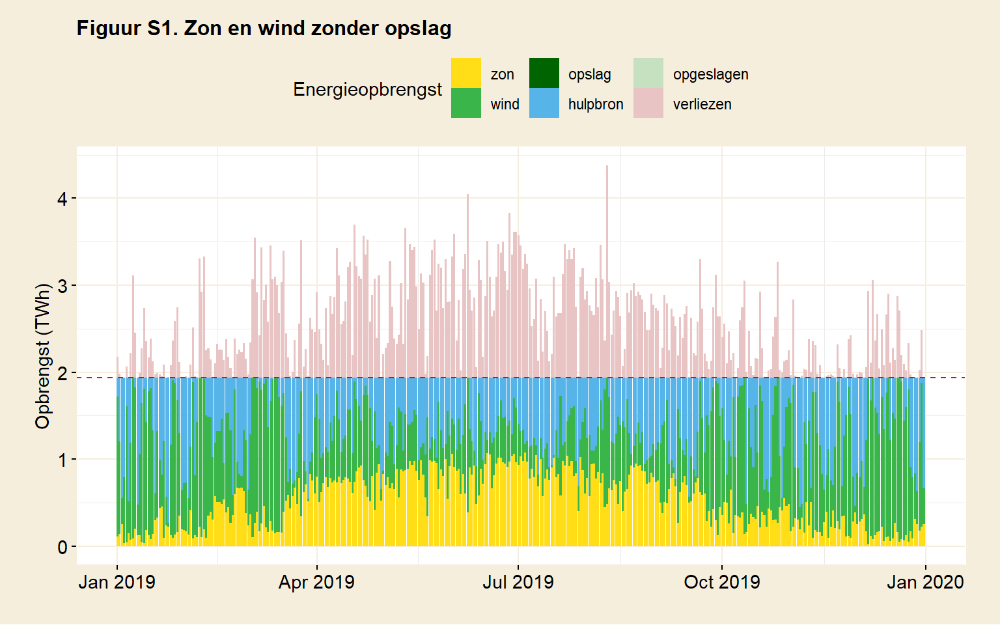
In figuur S1 vallen twee dingen op. Onder de rode stippellijn, die de dagelijkse energiebehoefte aangeeft, is er een groot blauw gebied te zien. Die vertegenwoordigt de inzet van de hulpbron. Als er geen hulpbron zou zijn, zou dit gebied het energietekort weergeven. Boven de stippellijn is een rood gebied zichtbaar. In dit geval is dat gelijk aan de overproductie, want als er geen opslag wordt gebruikt gaat het surplus verloren. De rode en blauwe gebieden hebben hetzelfde oppervlak. Zon en wind waren afgestemd op het jaarverbruik, alleen kan er niet altijd op het juiste moment geleverd worden. In een simulatie waar geen opslag wordt gebruikt, springt de hulpbron dan in. Het surplus gaat verloren.
Het lukt zon en wind dus niet elkaar te compenseren. Hoewel de figuur dagen toont in plaats van de in de berekeningen gebruikte perioden van tien minuten, is ook op dagniveau de variatie van de tekorten duidelijk zichtbaar. In totaal is de hulpbron in scenario 1 verantwoordelijk voor 33% van de energieproductie (tabel 5.1). Met andere woorden, 33% van de productie uit wind en zon werd net gebruikt voor direct energielevering: er was teveel aan energie, en dat ging verloren. De conclusie is dat hoewel de capaciteit van wind en zon in principe voldoende is om Nederland van energie te voorzien, wind en zon niet in staat zijn elkaars tekorten op te vangen.
Wat zou daaraan gedaan kunnen worden? Een mogelijke oplossing zou zijn om meer zonnecellen en windmolens te plaatsen. Echt problematisch zijn de momenten waarop het niet waait èn niet zont. Op zo’n moment helpt zelfs de uitbreiding van de capaciteit niet, hoeveel er ook wordt bijgeplaatst. Fundamenteel gezien kan het probleem dus niet worden opgelost, maar misschien mag er gehoopt worden op een oplossing waarbij de tekorten klein blijven. Om dat te testen, wordt in het tweede scenario het dubbele aantal windmolens en het dubbele aantal zonnecellen geplaatst. Dat betekent dus ook dat er een twee keer zo grote investering in infrastructuur wordt gedaan.
De nieuwe situatie wordt in figuur S2 gesimuleerd. Heel Nederland staat nu vol met windmolens. Dat is in werkelijkheid niet haalbaar, maar er kunnen wellicht ook molens geplaatst worden op zee, op het continentaal plat. Ook het aantal zonnecellen is verdubbeld. Tegen elkaar aanliggend beslaan die nu 7.4% van Nederland, ongeveer het oppervlak van de provincie Zuid-Holland. In het model is een dergelijk scenario snel geïmplementeerd. In werkelijkheid zal een dergelijk ruimtegebruik offers vragen.
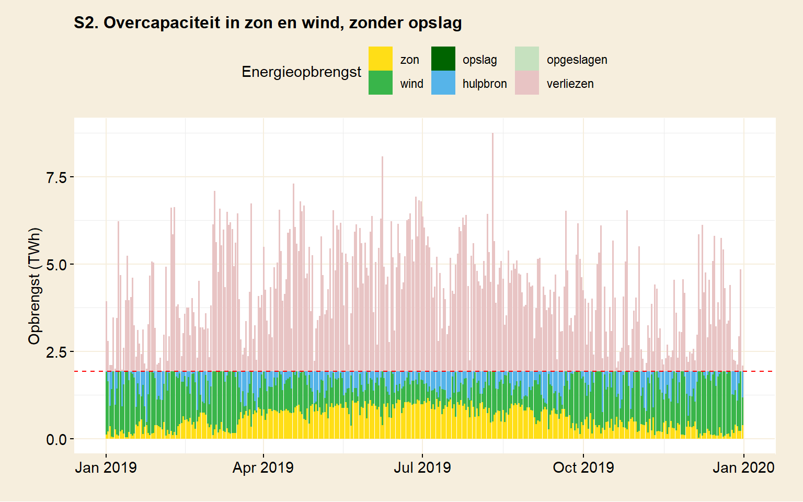
Ook in andere zin leidt deze aanpak tot extremen. In een poging de tekorten op te vangen, staat er nu twee keer de hoeveelheid infrastructuur. De investeringskosten verdubbelen daarmee ook, hetzelfde geldt voor onderhoud. Energie wordt kortom twee keer zo duur. Ook leidt de overcapaciteit tot een grote hoeveelheid onbenutte energie. Op momenten dat zon en wind op hun best zijn, gaat volgens het model 119% van de energie verloren.
Ondanks de verdubbeling in capaciteit kan er nog steeds niet aan de energievraag worden voldaan. De simulatie resulteert in een energietekort van 19% over heel 2019. Een derde van de tijd (4 maanden in totaal) werd er niet voldoende energie opgewekt om aan de vraag te voldoen. Bij elkaar opgeteld zou 2019 tweeëneenhalve week een bijna geheel gebrek aan energie hebben gehad. (Zie tabel 5.1.)
Het scenario lijkt dus niet tot een oplossing te leiden. Zon en wind kunnen niet zonder aanvullende energiebron. De fluctuaties zijn te groot, zelfs als zon en wind worden gecombineerd. De energiemix zal verder moeten worden uitgebreid. Wellicht dat energie-opslag een uitkomst kan bieden?
| S1. zon wind, geen opslag | S2. overcapaciteit zon wind, geen opslag | |
| Verbruik | ||
| Jaarverbruik | 706 TWh | 706 TWh |
| Aan waterstof | 0 % | 0 % |
| Aan elektriciteit | 100 % | 100 % |
| Ruimtegebruik | ||
| Oppervlakte zon | 4 % NL | 7 % NL |
| Oppervlakte wind | 51 % NL | 103 % NL |
| Capaciteit | ||
| Zon | 50 % | 100 % |
| Wind | 50 % | 100 % |
| Hulpbron | 100 % | 100 % |
| Opslag | 0 TWh | 0 TWh |
| Levering | ||
| Zon | 27 % | 30 % |
| Wind | 40 % | 51 % |
| Hulpbron | 32.8 % | 19.2 % |
| Opslag | 0 % | 0 % |
| Verliezen | ||
| Onbenut zon & wind | 33 % | 119 % |
| Omzettingsverliezen | 0 % | 0 % |
| Voor een toelichting op de tabel, zie einde van dit hoofdstuk. | ||
5.4.2 Kunnen fluctuaties worden opgevangen door elektrische auto’s als energiebuffer te gebruiken?
Stel dat het gehele wagenpark van Nederland ge-elektrificeerd zou worden. Daarmee zou er in potentie een aanzienlijke hoeveelheid opslagcapaciteit beschikbaar komen. Misschien kunnen daarmee de fluctuaties in de opbrengst van zonne- en windenergie worden opvangen.
Er zitten wel haken en ogen aan dat plan. Bij een tekort aan energie moeten er genoeg auto’s aan het net hangen om voldoende vermogen af te kunnen staan. Of een auto voor vervoer gebruikt kan worden is dus mede afhankelijk van de weersomstandigheden en de nationale energievraag. Ook bij energieoverschot moeten er genoeg auto’s aan het net hangen om de laadstroom te kunnen verwerken. Hoeveel lading zou een auto eigenlijk kunnen afstaan? De beschikbare capaciteit zal minder zijn dan de totale capaciteit van het wagenpark, want er moet ook nog gereden worden. Een deel van de capaciteit gaat in wegkilometers zitten.
Het model houdt met al deze haken en ogen geen rekening en blijft optimistisch. Er wordt vanuit gegaan dat het totale wagenpark in Nederland ge-elektrificeerd is (8,7 miljoen voertuigen) en permanent gebruikt kan worden als buffer. Er wordt dus niet gereden met het wagenpark. Ook wordt aangenomen dat de accu’s volledig geladen en ontladen kunnen worden, hoewel dat consequenties heeft voor de levensduur.
Hoe groot is de buffer die zou onstaan? Daarvoor moet geschat worden. De duurste variant van de Tesla model 3 heeft een accucapaciteit van 82 kWh. Met dat als uitgangspunt wordt de gecreëerde buffer in totaal 0.7 TWh groot. Zoals uit bij de behandeling van opslag bleek, zou er qua grondstoffen voor Nederland aan lithium maximaal tweederde dag aan nationaal verbruik (1,3 TWh) beschikbaar zijn.
Een alternatief is om accucapaciteit te installeren die geheel is toegewijd aan het opvangen van fluctuaties. Dit soort massaopslag wordt inderdaad al gerealiseerd, bijvoorbeeld door Tesla in Hornsdale in Australië. Hornsdale heeft een capaciteit van 194 MWh. Als vervanging van de capaciteit van het wagenpark zou men 3600 maal de massaopslag van Hornsdale moeten realiseren. Er zou overigens onvoldoende lithium zijn om dit te realiseren als men daarnaast ook nog elektrisch wil rijden.
Een voordeel van lithium-accu’s is dat de laadtijd kort is. Een accu met een capaciteit van 1 GWH kan een laadstroom van 1 GW aan en is dus in een uur geladen. (Dat wil niet zeggen dat het goed voor de levensduur van die accu is.) Dat is goed nieuws, het vermogen van de laadstroom zal daarmee niet snel een probleem vormen. Dat is anders dan bijvoorbeeld bij spaarbekkens, waar capaciteit nog niets zegt over het aantal pijpen en pompen dat het bekken moet vullen.
Hoe realistisch dit scenario in werkelijkheid is, valt te bezien. De hoeveelheid lithium die in dit scenario gebruikt wordt, zou beslag leggen op ruim de helft van wat er in Nederland per persoon beschikbaar is. Zou men accu’s langer willen laten meegaan, dan leidt dat al snel tot een verdubbeling van de accubehoefte (zie hoofdstuk opslag). Daarvoor is dan te weinig lithium beschikbaar. Bovendien wordt lithium ook gebruikt in smartphone’s, laptops, etc. Economisch gezien zal lithium lang voordat de voorraad is uitgeput een duur goed zijn geworden.
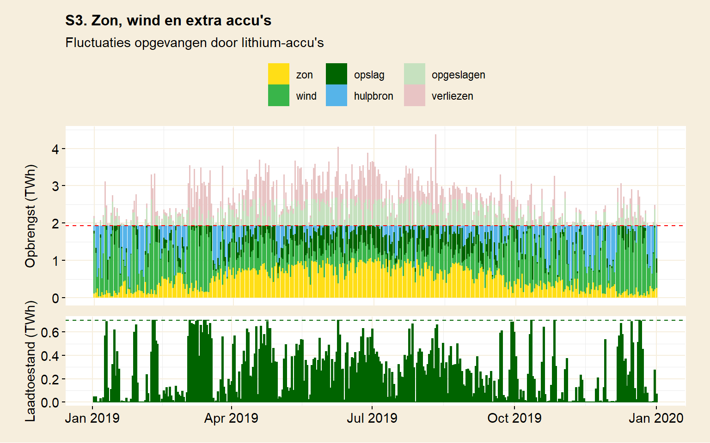
De simulatie (figuur S3) laat zien in welke mate deze buffercapaciteit in staat is de fluctuaties van zon en wind op te vangen. Het blijkt dat de capaciteit aan lithium-accu’s ter grootte van het gehele wagenpark van Nederland onvoldoende is. De figuur toont dat de accu vaak leeg of bijna leeg is. Te zien is aan de blauwe gebieden in het jaarverloop dat er frequent nog gebruik wordt gemaakt van een hulpbron om de tekorten aan te vullen. In totaal dekt de accu nu 15% van de energielevering en de hulpbron 18% (zie tabel 5.2). Het maximale laadvermogen in dit scenario, 156 GW, blijft ruim binnen de marges van de accu’s (0,7 TW). Laden is dus niet het probleem, maar capaciteit wel.
Werd in scenario 1 (tabel 5.1) nog 33% van de energiedoor de hulpbron geleverd, nu (in scenario 3) is dat dus gereduceerd tot 18% . Het tekort halveert dus kennelijk door gebruik te maken van de autoaccu’s. Zou het dan zo zijn dat het tekort verdwijnt als deze accucapaciteit twee keer zo groot zou zijn? In scenario S4 is de capaciteit van het wagenpark verdubbeld. Dat vermindert het tekort (en dus het bijdraaien) van 18% van het jaarlijks verbruik tot 15%. De situatie verandert er niet wezenlijk door.
Een andere optie is misschien de verdubbeling van de capaciteit van zon en wind in de mix. Om dit te bereiken moet Nederland fictief helemaal worden volgezet met windmolens en zonnecellen bezetten ruim 7% van Nederland. Dat helpt, zoals te zien is in tabel 5.2, scenario 5. Het tekort wordt nu teruggebracht tot 5%. Nog steeds blijft een hulpbron noodzakelijk.
Alles bij elkaar leidt het gebruik van een ge-elektrificeerd wagenpark volgens het model niet tot een oplossing. De insteek bij de inrichting van het model was optimistisch. Het gebruik van infrastructuur zit al tegen de marges aan, of zelfs daar overheen. Het zal in werkelijkheid lastig worden om accucapaciteit op deze schaal te realiseren, gezien de hoeveelheid lithium die daarvoor nodig is. Ook het gebruikte landoppervlak zal een stevig debat vergen. Desondanks wordt het doel niet gehaald.
| S3. zon wind en elektrisch wagenpark | S4. zon wind en 2x wagenpark | S5. 2x zon en wind, wagenpark | |
| Verbruik | |||
| Jaarverbruik | 706 TWh | 706 TWh | 706 TWh |
| Aan waterstof | 0 % | 0 % | 0 % |
| Aan elektriciteit | 100 % | 100 % | 100 % |
| Ruimtegebruik | |||
| Oppervlakte zon | 4 % NL | 4 % NL | 7 % NL |
| Oppervlakte wind | 51 % NL | 51 % NL | 103 % NL |
| Capaciteit | |||
| Zon | 50 % | 50 % | 100 % |
| Wind | 50 % | 50 % | 100 % |
| Hulpbron | 100 % | 100 % | 100 % |
| Opslag | 0.7 TWh | 1.4 TWh | 0.7 TWh |
| Levering | |||
| Zon | 27 % | 27 % | 30 % |
| Wind | 40 % | 40 % | 51 % |
| Hulpbron | 18 % | 15 % | 4.6 % |
| Opslag | 15 % | 18 % | 15 % |
| Verliezen | |||
| Onbenut zon & wind | 12 % | 8 % | 99 % |
| Omzettingsverliezen | 6 % | 7 % | 6 % |
| Voor een toelichting op de tabel, zie einde van dit hoofdstuk. | |||
5.4.3 Hoe effectief is windenergie op land?
Windenergie heeft een relatief lage energiedichtheid. Om de energie te produceren die in 2019 verbruikt werd, zou Nederland volgens het model meer dan volgezet moeten worden met windmolens (Tabel 5.3, S6). Het ruimtegebruik van windmolens is dus aanzienlijk. Nederland is een klein land en het gebruikt veel energie. De fluctuaties worden voor nu buiten beschouwing gelaten.
Met ‘Nederland’ wordt hier het landoppervlak van Nederland bedoeld, inclusief Waddenzee, de Zeeuwse stromen, IJsselmeer en Markermeer (figuur 2.3). Er is in Nederland weinig ongebruikte grond te vinden. Daar staat tegenover dat na de plaatsing van windmolens de ruimte nog gebruikt kan worden voor andere doeleinden. Dat is een voordeel dat zonnepanelen niet hebben. Het is wel zo dat iedere windmolen bereikbaar moet zijn voor onderhoud. Er moet een weg naartoe liggen. In de simulatie staan de windmolens 875 meter uit elkaar. Dat betekent dus dat in de gebruikte ruimte er om de 875 meter een weg zal moeten worden aangelegd.
Het CBS houdt ons ruimtegebruik bij. In 2015 was dat: Agrarisch terrein (54%), Bos en open natuurlijk terrein (12%), Buitenwater en Binnenwater (19%), Bebouwd terrein (9%), Verkeersterrein (3%), Recreatieterrein (3%) en Semi-bebouwd terrein (1%).
Figuur 5.3. Bodemgebruikskaart voor Nederland (2015). Bron: CBS/Kadaster, Compendium voor de Leefomgeving
De vraag is waar windmolens geplaatst kunnen worden zonder dat de huidige functies van de gebruikte ruimte in het geding komen. Plaatsing in bos en natuurgebieden zullen velen misschien niet ideaal vinden. De Oosterschelde en de Waddenzee vallen beiden onder natuurgebied. Dat geldt niet voor het IJsselmeer en het Markermeer, maar die beslaan samen slechts 4,4% van Nederland. Wellicht is landbouwgebied een optie, dat beslaat 54% van Nederland. Hoe dan ook, een dergelijk ruimtegebruik zal offers vragen.
De afweging die gemaakt zou moeten worden, is of de lage opbrengst van windenergie de offers ook waard is. Een betekenisvolle bijdrage van windenergie heeft als consequentie dat er in een groot gedeelte van Nederland windmolens komen te staan. Zelfs als onderdeel van de energiemix, bijvoorbeeld als de andere helft van de energievraag door zon of kernenergie geleverd zou worden, blijft de helft van Nederland nodig. Om dit in perspectief te brengen: de provincie Noord-Holland beslaat ongeveer 10% van Nederland. Het model gaat uit van molens die 875 meter uit elkaar staan en 200 meter hoog zijn. In vijf provincies zou er dus om de 875 meter een molen worden geplaatst. Dat is hoe er ook tegen aan wordt gekeken veel ruimte. Dit ruimtegebruik is eigenlijk alleen verder te beperken door het energieverbruik te verminderen.
Hoe zit het met windenergie op zee? Het model kan dat niet precies berekenen omdat de fijnmazige gegevens daarvoor ontbreken. Er kan wel gerekend worden op de achterkant van de envelop, als wordt aangenomen dat de variatie in wind op zee gelijk is aan die op land. Onder die aanname is te verwachten dat de opbrengst op zee het dubbele is van die op land (zie hoofdstuk wind). Dat zou betekenen dat windenergie op zee de helft van het oppervlakte gebruikt. Het Nederlandse gedeelte van het continentaal plat is iets groter dan Nederland zelf (135%). Volgens wikipedia is 40% daarvan te gebruiken voor windmolens. Als de windmolens uit scenario 6 van land naar zee worden verplaatst, dan zouden deze zo’n 40% van het plat bezetten. Ongeveer gelijk dus aan de daar beschikbare ruimte.
Dat doet realiseren dat de grenzen voor windcapaciteit in Nederland aardig snel bereikt worden, als dat in prespectief wordt gebracht met de hoeveelheid energie die Nederland gebruikt. Het betekent ook dat de ruimte voor overcapaciteit beperkt is, zelfs als men daarvoor zou uitwijken naar zee. Dat verhoudt zich minder gunstig met scenario’s waarbij overcapaciteit in windenergie vereist wordt.
Zou zonne-energie gezien dit alles dan niet een veel efficiëntere keuze zijn? Uit het model blijkt dat 7% van NL nodig zou zijn om het jaarverbruik met zonnecellen op te wekken (Tabel 3, S7). Zonne-energie brengt per vierkante kilometer 14 keer meer op. Kunnen we windenergie maar beter laten varen en in plaats daarvan vol inzetten op zonne-energie? Dat is een goede vraag, waar apart op wordt ingegaan.
| S6. Alleen windenergie | S7. Alleen zonne-energie | |
| Verbruik | ||
| Jaarverbruik | 706 TWh | 706 TWh |
| Aan waterstof | 0 % | 0 % |
| Aan elektriciteit | 100 % | 100 % |
| Ruimtegebruik | ||
| Oppervlakte zon | 0 % NL | 7 % NL |
| Oppervlakte wind | 103 % NL | 0 % NL |
| Capaciteit | ||
| Zon | 0 % | 100 % |
| Wind | 100 % | 0 % |
| Hulpbron | 100 % | 100 % |
| Opslag | 0 TWh | 0 TWh |
| Levering | ||
| Zon | 0 % | 38 % |
| Wind | 61 % | 0 % |
| Hulpbron | 39.4 % | 62.1 % |
| Opslag | 0 % | 0 % |
| Verliezen | ||
| Onbenut zon & wind | 39 % | 62 % |
| Omzettingsverliezen | 0 % | 0 % |
| Voor een toelichting op de tabel, zie einde van dit hoofdstuk. | ||
5.4.4 Schone energie zonder kernenergie: kan dat?
Kernenergie kan worden ingezet om de opbrengstfluctuaties van zon en wind op te vangen. Kernenergie is eigenlijk het enige alternatief om continu energie te kunnen produceren, zonder dat daarbij CO2 wordt uitgestoten. Als kernenergie niet wordt ingezet, dan moeten de fluctuaties in de energievoorziening op een andere manier worden opgevangen. Energieopslag is dan de enig resterende oplossing.
Eerder werd gezien dat opslag in accu’s en spaarbekkens serieuze limitaties hebben. Grondstoffen vormen een beperkende factor in het gebruik van accu’s. Voor spaarbekkens geldt dat de geografische situatie in Nederland (en eigenlijk ook in Europa) zich daar niet goed voor leent (zie hoofdstuk opslag).
Opslag van energie in waterstof heeft wat dat betreft betere kaarten. Er kunnen grotere hoeveelheden energie mee worden opgeslagen. De uitdaging wordt dus om een energiemix samen te stellen gebaseerd op zon, wind en waterstofopslag, die geen gebruik meer maakt van een hulpbron. Dat zou uit het oogpunt van infrastructuur goed nieuws zijn, want het scheelt de plaatsing van hulpcentrales.
In deze simulatie wordt er van uitgegaan dat de maatschappij voor 25% draait op waterstof, en voor 75% op elektriciteit. In de energietransitie zullen niet alle processen ge-elektrificeerd kunnen worden, dus enig verbruik in waterstof is realistisch. De verhouding is vrij willekeurig gekozen, met een voorkeur voor elektriciteit. Een ge-elektrificeerd proces is vaak efficiënter dan een waterstofgebaseerd proces.
Begin met min of meer het ’standaard’scenario: een gelijke hoeveelheid wind en zon, zodanig dat ons gemiddelde energieverbruik wordt gedekt. Het resultaat is te zien in figuur S8. Direct is duidelijk dat in deze eerste simulatie de opzet nog niet slaagt (tabel 5.4). De hulpbron moet worden aangesproken om tekorten aan te vullen.
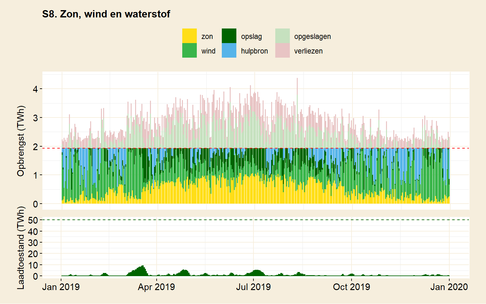
De opslag die hier wordt gesimuleerd is 50 TWh groot. Dat is een krappe maand aan energieverbruik, best veel dus. De opslag raakt echter niet vol. Hoe komt dat? Er gaat wat energie verloren aan de productie van waterstof. Datzelfde geldt voor het leveren van elektriciteit uit de opslag. Beide hebben te maken met efficiëntieverlies van omzettingen en die zijn niet te vermijden. Daarnaast blijkt dat alle overschot van energie uit wind en zon wordt benut (tabel 5.4, S8, onbenut). Dat moet dan betekenen dat er niet voldoende capaciteit is om de opslag te vullen.
De voor de hand liggende stap is om de energieproductie te vergroten. In scenario S9 wordt de hoeveelheid zonnecellen verdubbeld. Het aantal windmolens blijft hetzelfde. De opslag wordt uitgebreid tot 150 TWh.
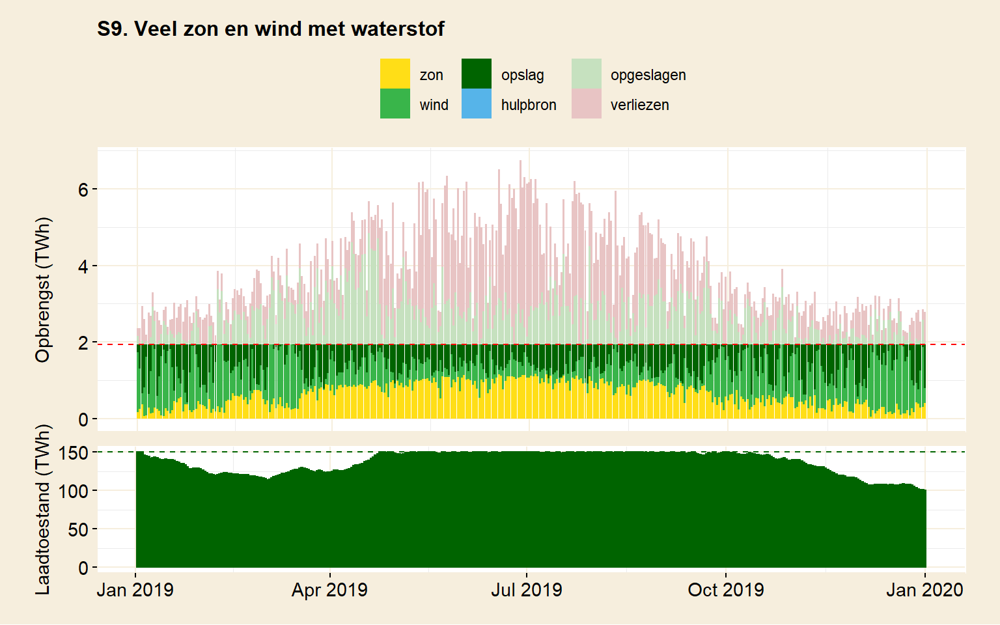
Nu kan de simulatie het wèl zonder hulpbron doen (figuur S9). Om te zien of dit ook voor een langere periode geldt, word de simulatie herhaald met dezelfde configuratie. Figuur S10 toont het verloop tussen begin 2001 en eind 2019. Ook over deze langere periode hoeft de hulpbron niet bij te draaien. Te zien is aan de minima van de laadtoestand in figuur S10 dat de opslag niet veel kleiner dan 150 TWh kan zijn. Meer reserve aanhouden zou op zich dus geen slecht idee zijn. In 2017 komt de bodem in zicht, een slechter jaar kan deze opslag niet meer aan.
Goed, wat staat er nu uiteindelijk aan infrastructuur om dit resultaat te bereiken? Windmolens staan op grofweg de helft van het landoppervlak (of 20% van het continentaal plat). Het model rekent voor het oppervlaktegebruik van zonnecellen 8% van Nederland (zonder tussenruimte). Dat is een oppervlak ter grootte van de provincie Zuid-Holland. Zonnecellen zijn lastig te combineren met ander grondgebruik. Misschien dat daar landbouwgrond voor moet worden opgeofferd?
De noodzakelijke hoeveelheid opslag is alleen te realiseren door gebruik te maken van waterstof. De gebruikte 150 TWh is vergelijkbaar met tweeëneenhalve maand aan nationaal energieverbruik. De benodigde opslagcapaciteit is enorm. Een dergelijke capaciteit is met accu’s onmogelijk te realiseren.
Maar ook de realisatie via waterstof kent zijn uitdagingen. Er is uitgebreide en diverse infrastructuur nodig om dat voor elkaar te krijgen. Hieronder wordt daar een schatting van gemaakt.
Begin met de waterstofproductie, die gebeurt met behulp van electrolysers. Neem aan dat een waterstoffabriek een vermogen van 100 MW heeft (‘s werelds grootste heeft een vermogen 20 MW. In Nederland leeft de ambitie om in 2025 naar 100 MW te schalen). Hoeveel zijn er daar van nodig? Om dat te schatten kan er worden gekeken naar het piekvermogen waarmee de waterstofopslag werd geladen. Dat piekvermogen moet door de waterstoffabrieken kunnen worden verwerkt, wil er geen energie verloren gaan. Een conservatieve schatting geeft als piekvermogen 330 GW aan, wat neerkomt op 3300 waterstoffabrieken (330 / 0,1). (Het piekvermogen werd geschat door het gemiddelde te nemen van de grootste 20% aan tienminuutsopbrengsten. In de tabel wordt dat aangegeven met ’gemiddeld maximum laadvermogen’. Het absolute maximum wordt ook genoemd, als ‘maximum laadvermogen’.)
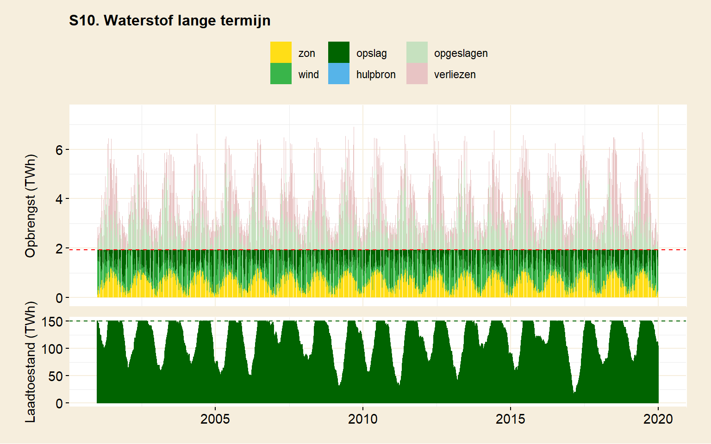
Waterstof moet ook weer kunnen worden omgezet in elektriciteit. Als er een elektriciteitstekort onstaat, wordt de opslag aangesproken. Voor productie van elektriciteit moet waterstof worden verbrand (een waterstofcentrale kan vergeleken worden met een gascentrale). Het piekvermogen van de elektricteitsvraag bedroeg 60 GW, goed voor 20 waterstofenergiecentrales van 3 GW (60 / 3).
Compressie en opslag van waterstof vallen buiten de berekeningen van het model. Het piekvermogen dat verwerkt moet worden (330 GW) is 4 keer meer (330 GW / 81 GW)dan Nederland continu verbruikt. De waterstof die op deze momenten geproduceerd wordt moet onder de grond worden gepompt. Vergelijk het met spaarbekkens die voldoende pompen en pijpwerk moeten hebben om genoeg water naar boven te kunnen pompen. Is het haalbaar zo’n groot vermogen op tijd te comprimeren en onder de grond te krijgen?
Het blijkt dat er voor energieopslag in waterstof veel additionele infrastructuur nodig is. Er zijn fabrieken nodig voor de productie van waterstof en verbrandingscentrales om elektriciteit te kunnen maken. Omdat de gevraagde vermogens hoog zijn, is deze infrastructuur omvangrijk. Dat is vooral het geval bij de productie van waterstof, waar de fabrieken een vermogen aan moeten kunnen dat vier keer groter is dan het nationaal verbruik.
Maar ook de behoefte aan verbrandingscentrales is aanzienlijk. Het model ging er van uit dat de elektriciteitsvraag 75% van de energiebehoefte betrof (60 GW). Dat vermogen werd in de simulatie ook daadwerkelijk verlangd voor elektriciteitsproductie. Het vermogen van bestaande energiecentrales, even er vanuit gaand dat deze makkelijk voor waterstofverbranding zijn aan te passen, is goed voor 25% van ons verbruik (zie hoofdstuk verbruik). Dat zou betekenen dat er in dit scenario dus voor 50% aan ons verbruik moet worden bijgebouwd. Dat is een verdriedubbeling van het aantal bestaande centrales. Ook dat zal een substantiële investering zijn.
Dat telt allemaal op. Een mix zonder kernenergie betaalt in deze simulatie niet alleen voor 150% aan vermogen in wind- en zonne-energie, maar ook voor 409% aan vermogen in waterstoffabrieken en vervolgens nog 75% aan vermogen in verbrandingscentrales. Dat er aan deze stapeling van infrastructuur een prijskaartje hangt, is niet onaannemelijk. De huidige situatie op basis van fossiele brandstoffen vergt een investering in infrastructuur die proportioneel is met 100% van ons vermogen. Bij gelijke kosten voor infrastructuur zou de energievoorziening dus meer dan zes keer duurder worden dan nu het geval is. (De kosten voor de verschillende vormen van infrastructuur zijn natuurlijk niet hetzelfde. Het bepalen van de exacte kosten voor infrastructuur is echter lastig. De benadering hier gaat uit van kosten voor vermogen in plaats van het noemen van een bedrag. De relatie zal niet één op één zijn, maar het is aannemelijk dat als er betaald moet worden voor diverse infrastructuur die 6x het verbruik van Nederland moet dekken, dat aanzienlijk meer gaat kosten dan een situtatie waar infrastructuur nodig is die ons verbruik 1x dekt.)
Tot slot dan: kan duurzame energie inderdaad zonder kernenergie? Dat hangt af van het vertrouwen dat men heeft in toekomstige technische ontwikkelingen. De techniek staat op veel vlakken nog in de kinderschoenen. Het verkrijgen van een inschatting of grote hoeveelheden waterstof voldoende snel zijn op te slaan in de praktijk is daarbij cruciaal. Als dat niet lukt, dan is deze opslagmethode geen oplossing voor het probleem. Ook het tijdspad tot een goede oplossing is onduidelijk. Een tweede punt is dat men bereid zal moeten zijn te betalen voor extra de infrastructuur die deze oplossing met zich meebrengt.
| S8. Zon, wind en waterstof | S9. Veel zon en wind met waterstof | S10. Waterstof lange termijn | |
| Verbruik | |||
| Jaarverbruik | 706 TWh | 706 TWh | 706 TWh |
| Aan waterstof | 25 % | 25 % | 25 % |
| Aan elektriciteit | 75 % | 75 % | 75 % |
| Ruimtegebruik | |||
| Oppervlakte zon | 4 % NL | 7 % NL | 8 % NL |
| Oppervlakte wind | 51 % NL | 51 % NL | 52 % NL |
| Capaciteit | |||
| Zon | 50 % | 100 % | 100 % |
| Wind | 50 % | 50 % | 50 % |
| Hulpbron | 100 % | 0 % | 0 % |
| Opslag | 50 TWh | 150 TWh | 150 TWh |
| Levering | |||
| Zon | 27 % | 33 % | 33 % |
| Wind | 40 % | 37 % | 37 % |
| Hulpbron | 17.7 % | 0 % | 0 % |
| Opslag | 15 % | 30 % | 30 % |
| Verliezen | |||
| Onbenut zon & wind | 0 % | 26 % | 17 % |
| Omzettingsverliezen | 22 % | 31 % | 33 % |
| Draaitijd hulpbron | |||
| Totale draaitijd | 29.3 % | 0 % | 0 % |
| Draaitijd op > 90% verm. | 5.8 % | 0 % | 0 % |
| Laadvermogen opslag | |||
| Maximaal | 359 GW | 655 GW | 750 GW |
| Gemiddelde top 20% | 164 GW | 307 GW | 330 GW |
| Max. ontladen elektr. | 45 GW | 45 GW | 45 GW |
| Inventaris | |||
| Hulpcentrales (3 GW) | 27 | 0 | 0 |
| Waterstoffabrieken (100 MW) | 1642 | 3067 | 3298 |
| Waterstofcentrales (3 GW) | 20 | 20 | 20 |
| Periode | 2019 | 2019 | 2001 - 2019 |
| Voor een toelichting op de tabel, zie einde van dit hoofdstuk. | |||
5.4.5 Hoe ziet een energiemix met alleen kernenergie er uit?
Kernenergie is een continue energiebron. In tegenstelling tot variabele bronnen is het in staat op ieder moment aan onze energiebehoefte te voldoen. Dat geldt ook als de energiebehoefte niet constant zou zijn. De energielevering is daarop aan te passen.
Dat betekent dat de problematiek rondom fluctuaties bij kernenergie niet speelt. Uit het oogpunt van energielevering is een energiemix die enkel bestaat uit kernenergie met afstand de meest eenvoudige. Er is geen extra infrastructuur nodig om de energievoorziening op peil te houden. De investering blijft beperkt tot een 100% dekkend vermogen aan kerncentrales. Om Nederland van energie te voorzien volstaan 27 kerncentrales van 3 GW (de grootte van de kerncentrale in Doel, net over de Belgische grens). Deze centrales nemen tezamen een ruimte in van 21 km2 (berekend aan de hand van de oppervlaktebezetting van de centrale in Doel).
Kerncentrales produceren elektriciteit. In de energietransitie zullen niet alle processen ge-elektrificeerd kunnen worden. Er blijft een schone brandstof nodig. Dat wordt waarschijnlijk waterstof. Er zal dan infrastructuur nodig zijn voor de productie van waterstof. Het aantal waterstoffabrieken dat nodig is, zal moeten aansluiten op de vraag. In scenario 8 werd er vanuit gegaan dat de maatschappij voor 25% van haar energiegebruik afhankelijk is van waterstof. Om dat verbruik aan te kunnen zijn 202 waterstoffabrieken à 100 MW nodig.
Omdat kernenergie een continue energiebron is, kan het waterstof geproduceerd worden wanneer het nodig is. Er hoeft dus geen opslagcapaciteit te zijn. Datzelfde geldt voor waterstofenergiecentrales, want er hoeft geen stroom opgewekt te worden uit opslag.
Kernenergie is een schone bron in de zin dat het geen CO2 uitstoot. Het is onwaarschijnlijk dat er snel een tekort aan brandstof (uranium) zal onstaan. In die zin is kernenergie als duurzaam te beschouwen. Historisch gezien is kernenergie even veilig als wind- en zonne-energie (zie Our world in data). Vanuit een veiligheidsstandpunt redt het zelfs levens als het fossiele energiebronnen vervangt.
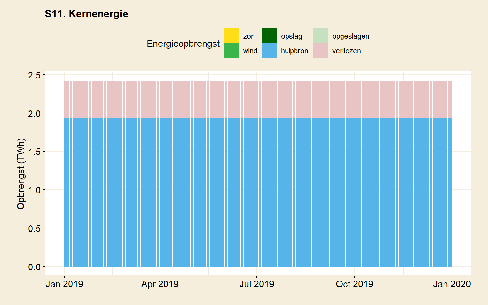
5.4.6 Kan beperkte inzet van kernenergie de fluctuaties van wind en zon opvangen?
Zou het mogelijk zijn een beperkt aantal kerncentrales in te zetten als achtervang bij fluctuerende bronnen, zonder daarbij energieopslag te gebruiken? Massa-opslag is complex en op de benodigde schaal bovendien nog onbewezen. Het gebruik van een continue hulpbron is het andere alternatief om de energielevering te kunnen blijven garanderen. Deze energiecentrales zouden op fossiele brandstoffen kunnen draaien, maar het doel van de energietransitie was nu juist om dat te vermijden. De alternatieve hulpbron die dan overblijft is kernenergie.
Een beperkte inzet van kernenergie betekent dat wind en zon qua energieproductie meer op hun schouders moeten nemen. We willen er immers voor zorgen dat er zo min mogelijk kerncentrales staan. Het opvoeren van de capaciteit van wind en zon lijkt een logische manier om het aantal benodigde kerncentrales te doen afnemen.
Maar dat idee blijkt niet helemaal te kloppen. Op een mistige, windloze winterdag zou de opbrengst van zon en wind nihil zijn. De kerncentrales die worden ingezet om het gat te vullen, krijgen de volle last van de vraag op hun schouders. Het is niet zozeer hoe lang de kerncentrales moeten worden ingezet, maar juist hoeveel vermogen er op dat moment wordt gevraagd. Al blijft het tekort bij dit enige, mistige etmaal en staan de kerncentrales de rest van het jaar stil, om het gevraagde vermogen te kunnen leveren zijn toch veel kerncentrales nodig.
In scenario 12 (tabel 5.5) is bekeken hoeveel kerncentrales er nodig zijn onder de aanname dat wind- en zonne-energie de energievraag dekken. Over de gehele periode produceren wind en zon precies genoeg energie om aan de vraag te voldoen. De kerncentrales worden dus alleen gebruikt om de gaten op te vangen.
Scenario 12 laat zien dat er 27 kerncentrales nodig zijn. Dat aantal is voldoende om Nederland van energie te voorzien, zelfs zonder hulp van wind en zon. Het doel van beperkte kernenergie wordt met dit scenario nog niet bereikt. Sterker nog, de inzet van de centrales is maximaal.
De momenten waarop de kerncentrales draaien, en vooral het vermogen waarmee dat gebeurt, moeten dus worden teruggebracht. Hoe vaak zijn de centrales eigenlijk actief? Het model meet de tijd dat een hulpron actief was en op welk vermogen dat gebeurde. Daarvoor werd de periode van 2015 tot en met 2019 doorgerekend. Scenario 12 laat zien dat de kerncentrales 10% van de tijd meer dan 90% van het gevraagde vermogen leveren. Zo’n 36 dagen per jaar wordt er dus van alle 27 centrales vol vermogen gevraagd.
De enige optie die openstaat om hier verandering in te brengen, is om de opbrengst uit wind en zon te vergroten. Zoals eerder gezien is het genereren van overcapaciteit niet makkelijk. De vraag is hoe ver men wil gaan.
In scenario 13 wordt gerekend met een extreem scenario waarbij windmolens alle landbouwgrond (de helft van Nederland) en het volledige bruikbare continentale plat beslaan (40% van het landoppervlak. In de simulatie is dit oppervlak verdubbeld, om de twee keer zo hoge opbrengst op zee te benaderen). Daarnaast wordt een kwart van de landbouwgrond met zonnecellen bedekt. Wind en zon wekken in dit scenario tezamen vijf keer meer energie op dan Nederland in de periode verbruikt.
Toch blijft het om uitval te voorkomen 5% van de tijd nodig om 27 kerncentrales op vol vermogen te laten draaien. Het aantal benodigde centrales wordt niet minder, alleen het aantal dagen dat ze ingezet moeten worden. Het idee was om het aantal centrales te beperken. Ook in dit extreme scenario blijkt dat volgens het model niet haalbaar. Het lijkt alles of niets te zijn. Of er staan kerncentrales die de gehele energievraag aankunnen, of de energievoorziening hapert.
Het alternatief van (weinig) kerncentrales werd deels ingegeven om de complexiteit van opslag in waterstof te vermijden. Maar misschien kan beperkt gebruik van opslag in de vorm van (lithium)accu’s wel helpen. De capaciteit die daarmee gerealiseerd kan worden haalt het niet bij die van waterstof, maar misschien voorkomt het net die perioden – bijvoorbeeld ’s nachts – waar kerncentrales op vol vermogen moeten draaien.
Scenario S14 voegt 0,7 TWh aan opslag toe aan de simulatie. Dat is gelijk aan de capaciteit van een volledig ge-elektrificeerd wagenpark, zoals elders ook werd gebruikt. Er kan worden getwijfeld of deze opslag erg realistisch is, maar het kan geen kwaad te kijken of het zou helpen. Welnu, in dit nieuwe scenario draaien de kercentrales 1% van de tijd op vol vermogen (tabel 5.5, S14).
De uitkomsten van het model leiden tot de conclusie dat beperkte inzet van kerncentrales geen oplossing biedt. Zelfs de inzet van accu-opslag brengt daar geen verandering in. Het is een alles-of-niets situatie. Het benodigde aantal kerncentrales is maximaal. De capaciteit ervan kan Nederland geheel van energie voorzien. Dat zou wind- en zonne-energie in feite overbodig maken. Wie niet voor kernenergie (op volle capaciteit) wil kiezen, zit vast aan massaopslag om uitval te voorkomen.
| S12. Basisscenario beperkt kernenergie | S13. Extra wind en zon | S14. Extra wind, zon en beperkte opslag | |
| Verbruik | |||
| Jaarverbruik | 706 TWh | 706 TWh | 706 TWh |
| Aan waterstof | 25 % | 25 % | 25 % |
| Aan elektriciteit | 75 % | 75 % | 75 % |
| Ruimtegebruik | |||
| Oppervlakte zon | 4 % NL | 25 % NL | 25 % NL |
| Oppervlakte wind | 53 % NL | 158 % NL | 158 % NL |
| Capaciteit | |||
| Zon | 50 % | 332 % | 332 % |
| Wind | 50 % | 150 % | 150 % |
| Hulpbron | 100 % | 100 % | 100 % |
| Opslag | 0 TWh | 0 TWh | 0.7 TWh |
| Levering | |||
| Zon | 27 % | 36 % | 36 % |
| Wind | 39 % | 50 % | 50 % |
| Hulpbron | 33.5 % | 13.5 % | 1.9 % |
| Opslag | 0 % | 0 % | 12 % |
| Verliezen | |||
| Onbenut zon & wind | 31 % | 391 % | 374 % |
| Omzettingsverliezen | 11 % | 8 % | 11 % |
| Draaitijd hulpbron | |||
| Totale draaitijd | 60.6 % | 23.7 % | 2.7 % |
| Draaitijd op > 90% verm. | 10 % | 5 % | 1 % |
| Laadvermogen opslag | |||
| Maximaal | 0 GW | 0 GW | 1319 GW |
| Gemiddelde top 20% | 0 GW | 0 GW | 370 GW |
| Max. ontladen elektr. | 0 GW | 0 GW | 45 GW |
| Inventaris | |||
| Hulpcentrales (3 GW) | 27 | 27 | 27 |
| Waterstoffabrieken (100 MW) | 0 | 0 | 3696 |
| Waterstofcentrales (3 GW) | 0 | 0 | 20 |
| Periode | 2015 - 2019 | 2015 - 2019 | 2015 - 2019 |
| Voor een toelichting op de tabel, zie einde van dit hoofdstuk. | |||
5.4.7 Zonne-energie is veel efficiënter dan wind. Kunnen we het niet redden met de zon alleen?
Zonne-energie is volgens de simulaties meer dan tien keer efficiënter dan windenergie op land. Uit een vergelijking van scenario’s S6 en S7 (tabel 5.3) bleek dat, per vierkante kilometer, zonne-energie 14 keer meer opbrengt dan windenergie op land. Dat ruimtegebruik is een nadeel van windmolens. Bij plaatsing op zee verbetert dat, maar heeft als nadeel dat het een dure optie is. Waarom dan niet enkel de zon gebruiken als energiebron? Dat zou veel minder ruimte innemen. En een veld met zonnecellen valt in het landschap ook nog eens minder op. Is het daarmee niet een voor de hand liggende keuze?
Een nadeel van zonne-energie is dat, hoewel het minder ruimte inneemt dan windmolens, die ruimte niet meer voor andere doeleinden bruikbaar is. Het plaatsen van zonnecellen in een natuurgebied bijvoorbeeld betekent noodzakelijkerwijs de vernietiging van natuur. Plaatsing op oppervlaktewater voorkomt doordringing van licht, wat een nadelige invloed heeft op het leven in het water. Plaatsing op landbouwgrond heeft tot gevolg dat agrarische productie het veld moet ruimen voor energieproductie. Hoewel zonnecellen dus minder ruimte innemen, is de plaatsing ervan ingrijpender.
Zoals bij meer van dit soort vragen maakt schaal uit. Om hoeveel oppervlak gaat het eigenlijk? In scenario 15 wordt een ‘basisscenario’ geschetst waarbij de zon precies genoeg energie produceert om aan de vraag te voldoen. Er wordt geen opslag gebruikt. Acht procent van Nederland wordt gebruikt voor zonnecellen.
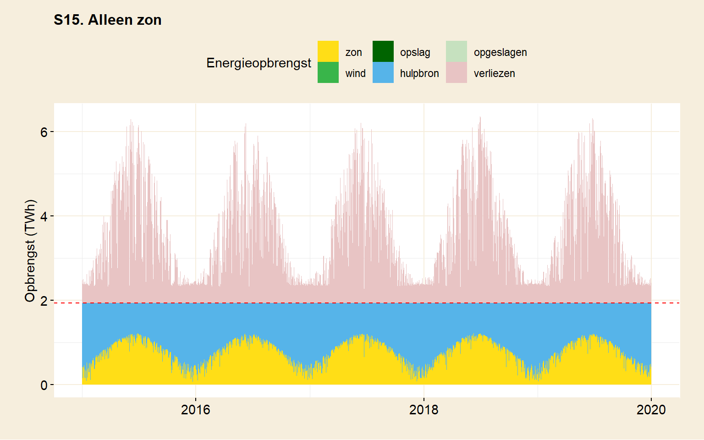
Door de breedtegraad waar Nederland op ligt, vindt de energieproductie voornamelijk in de zomer plaats. De winterperiode kenmerkt zich juist door een groot tekort aan energie. De golfbeweging is goed te zien in figuur S15. Om in de winter niet zonder energie te zitten, is er voor die periode een alternatief nodig. Hier wordt dat opgevangen door een hulpbron. Het effect van gebruik van een hulpbron werd elders ook al geconstateerd. Het opgestelde vermogen van de hulpbron moet typisch voldoende zijn om de totale energievraag over te kunnen nemen. Daarnaast moet deze ook nog eens continu beschikbaar zijn. Een schone hulpbron, zoals kernenergie, maakt energieopwekking door een variabele bron overbodig. (Het gebruik van een hulpbron die niet schoon is, wordt elders bekeken.)
De andere optie is om opslagcapaciteit te realiseren om de winterperiode door te komen. Het blauw in de figuur geeft de uitdaging mooi aan. De hulpbron is verantwoordelijk voor tweederde van de energieproductie (tabel 5.6) en dat tekort moet opgevangen gaan worden door energieopslag.
Er zijn twee knoppen om aan te draaien: de hoeveelheid zonnecellen en de hoeveelheid opslag. De hulpbron wordt daarbij op nul gehouden. Een grotere opslag betekent dat er minder zonnecellen nodig zijn. Omgekeerd geldt hetzelfde.
Laten we eerst proberen een schatting te maken voor een scenario waarbij het aantal zonnecellen zo klein mogelijk wordt gehouden. Daar kan het model voor worden gebruikt. De capaciteit van de opslag moet dan zo groot mogelijk zijn. Een inschatting van de maximaal haalbare grootte is lastig, omdat waterstofopslag op deze schaal nog niet eerder werd gerealiseerd. In scenario S16 wordt uitgegaan van 350 TWh. Dat is vergelijkbaar met een half jaar nationaal energieverbruik. (Het is moeilijk zo’n hoeveelheid energie te onderschatten. Dat staat gelijk aan 219 keer de mondiale opslagcapaciteit in spaarbekkens, die 95% van de mondiale opslag uitmaken.) Met de eis dat de bijdrage van de hulpbron verwaarloosbaar moet blijven, wordt de minimale hoeveelheid zonnecellen bepaald die de energiehuishouding in balans houdt.
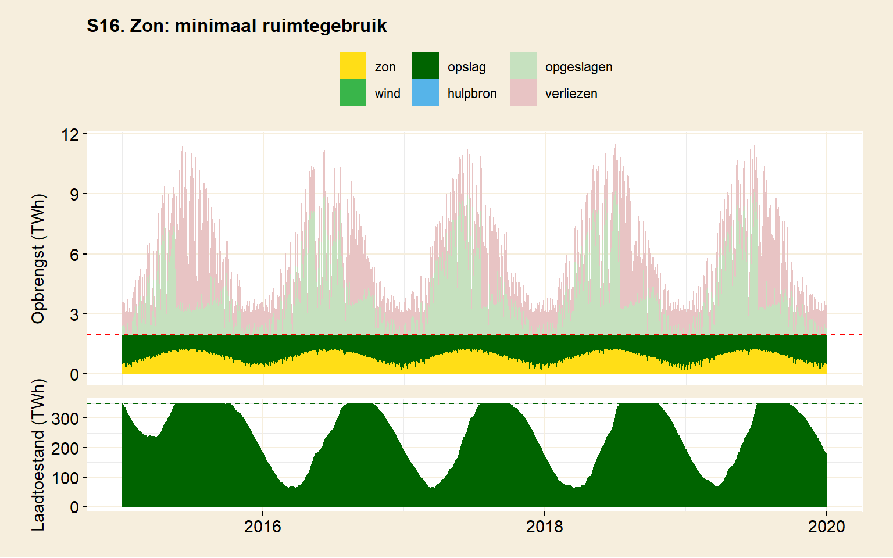
In figuur S16 lukt dat. Er wordt geen gebruik gemaakt van een hulpbron. Desondanks kan er altijd aan de energievraag worden voldaan. Om dat te bereiken blijkt er 6000 km2 aan zonnecellen nodig. Dat is ook zo’n beetje het kantelpunt. Bij minder oppervlak moet de hulpbron al snel worden ingezet. Het model gebruikt 14% van het landoppervlak voor zonnecellen. Dat komt neer op een kwart van de landbouwgrond (gebruik figuur 2.3 om uw eigen keuze te maken). Hier wordt overigens ook duidelijk dat plaatsing van zonnecellen op daken, waarbij de gebruikte ruimte niet onbruikbaar wordt, weinig zinvol is. Het benodigde oppervlak is daarvoor veel te groot.
De figuur laat zien dat de opslagcapaciteit voor deze periode voldoende is. De opslag raakt niet leeg. Ook een langere periode van 19 jaar liet zien dat de opgestelde infrastructuur voldoende zou zijn (niet getoond). De invloed der seizoenen komt in de opslag goed naar voren. Er is een mooie golfbeweging in de laadtoestand te zien. Omdat de opslag zo groot is, gaat er relatief weinig van de energieproductie verloren. Er is capaciteit genoeg om de overproductie van zonne-energie te kunnen opslaan.
Daarmee hebben we een schatting voor een minimum aan zonoppervlak. Die schatting is natuurlijk wel afhankelijk van hoe realistisch 350 TWh aan waterstofopslag in de toekomst zal blijken te zijn.
Er is nog een tweede belangrijk voorbehoud. Waar windenergie meer over het jaar verspreid is, piekt de opbrengst van zon nogal in de zomer. Dat leidt tot hoge vermogens. De opslag moet in staat zijn dat piekvermogen te kunnen verwerken. Het model schat de laadstroom in op maar liefst 9x het nationaal energieverbruik. Dat is een enorme laadstroom.
Hier toont zich de keerzijde van energie opwekken met zon. Een piekvermogen van 9 maal het Nederlands energieverbruik staat gelijk aan de simultane energieproductie van 490 Eemscentrales (’s lands grootste energiecentrale) op vol vermogen. Al dat vermogen moet per ommegaande kunnen worden omgezet in waterstof, gecomprimeerd, en onder de grond worden gestopt. Dat is nogal een taak. Het model zegt niets over hoe realistisch het is om dat op tijd te kunnen verwerken.
De omzetting naar waterstof vergt volgens het model 7500 waterstoffabrieken. Hoewel hier niet meegenomen, zal ook de infrastructuur voor compressie navenant moeten zijn. Krijg je zoveel waterstof snel genoeg onder de grond? Al met al stof om over na te denken, want het succes van deze opslagmethode hangt er van af.
De andere knop om aan te draaien, de hoeveelheid zonnecellen, blijkt minder zinvol te zijn. Vergelijk om dat te zien scenario S16 met S17 (tabel 5.6). Om de capaciteit van de opslag een orde van grootte naar beneden te krijgen (van 350 TWh naar 30 TWh), zou 85% van Nederland beschikbaar moeten worden gesteld voor zonnecellen. Dat is niet haalbaar.
Tot slot dan: alleen de zon gebruiken voor onze energievoorziening, is dat een goed idee? Zoals eerder ook het geval was vergt dat vertrouwen in een oplossing die technisch nog ontwikkeld moet worden: massaopslag met behulp van waterstof. Een scenario dat zon combineert met opslag moet daarbij in staat zijn om te gaan met enorme laadstromen. Of dat kan? Wie het weet mag het zeggen. Deze grote laadstromen, in combinatie met het feit dat voor waterstofopslag zowiezo verschillende soorten infrastructuur naast elkaar nodig zijn, leidt tot een grote hoeveelheid infrastructuur. Dat zal zijn weerslag hebben op de betaalbaarheid van de oplossing.
| S15. Alleen zon | S16. Zon, ruimte geminimaliseerd | S17. Zon, opslag geminimaliseerd | |
| Verbruik | |||
| Jaarverbruik | 706 TWh | 706 TWh | 706 TWh |
| Aan waterstof | 25 % | 25 % | 25 % |
| Aan elektriciteit | 75 % | 75 % | 75 % |
| Ruimtegebruik | |||
| Oppervlakte zon | 8 % NL | 14 % NL | 85 % NL |
| Oppervlakte wind | 0 % NL | 0 % NL | 0 % NL |
| Capaciteit | |||
| Zon | 100 % | 190 % | 1130 % |
| Wind | 0 % | 0 % | 0 % |
| Hulpbron | 100 % | 0 % | 0 % |
| Opslag | 0 TWh | 350 TWh | 30 TWh |
| Levering | |||
| Zon | 38 % | 43 % | 49 % |
| Wind | 0 % | 0 % | 0 % |
| Hulpbron | 62.2 % | 0 % | 0 % |
| Opslag | 0 % | 57 % | 51 % |
| Verliezen | |||
| Onbenut zon & wind | 60 % | 28 % | 967 % |
| Omzettingsverliezen | 17 % | 68 % | 63 % |
| Draaitijd hulpbron | |||
| Totale draaitijd | 71.6 % | 0 % | 0 % |
| Draaitijd op > 90% verm. | 53.3 % | 0 % | 0 % |
| Laadvermogen opslag | |||
| Maximaal | 0 GW | 1396 GW | 3772 GW |
| Gemiddelde top 20% | 0 GW | 737 GW | 1441 GW |
| Max. ontladen elektr. | 0 GW | 45 GW | 45 GW |
| Inventaris | |||
| Hulpcentrales (3 GW) | 27 | 0 | 0 |
| Waterstoffabrieken (100 MW) | 0 | 7366 | 14412 |
| Waterstofcentrales (3 GW) | 0 | 20 | 20 |
| Periode | 2015 - 2019 | 2015 - 2019 | 2015 - 2019 |
| Voor een toelichting op de tabel, zie einde van dit hoofdstuk. | |||
5.4.8 Helpt besparen bij de opvang van fluctuaties?
Besparen op het energieverbruik vermindert de uitstoot van CO2. Dat is directe winst in de transitieperiode, waar er nog gebruik wordt gemaakt van fossiele brandstof. Als de energieproductie echter eenmaal schoon is, wordt uit dat oogpunt besparing overbodig.
Een tweede reden om te bezuiningen, is om de energievraag te verkleinen. Er is dan minder infrastructuur nodig. Dat is vooral gunstig bij energieopwekking door bronnen met een lage energiedichtheid, zoals zon en wind. Er is dan minder schaarse ruimte nodig en het verminderd het probleem van fluctuaties. In het geval van kernenergie dient het niet echt een doel.
Als bezuinigen gebruikt wordt om de plaatsing van windmolens en zonnecellen beheersbaar te houden, dan krijgt de besparing een permanent karakter. Anders dan bijvoorbeeld de autoloze zondagen uit de jaren ’70, destijds veroorzaakt door een olieboycot, gaat het niet om een tijdelijk tekort. Nederland blijft een klein grondgebied houden.
Daarmee loopt men het risico zichzelf in een hoekje te schilderen. Bij eerdere simulaties bleek dat wind en zon veel ruimte nodig hebben. Dat beperkt de mogelijkheid tot groei (extra energieverbruik bijv. voor verbetering van de gezondheidszorg, terugvangen van CO2, betere voedselproductie). Als bezuinigen wordt gebruikt als oplossing voor ruimtegebrek, dan zit men er aan vast.
Besparen zou een gunstig effect kunnen hebben op de hoeveelheid opslagcapaciteit die nodig is. Gebruikt men wind en zon, maar niet kernenergie, dan is opslag onontbeerlijk. De benodigde infrastructuur kan kleiner zijn als er bespaard wordt. Dat is een voordeel bij waterstofopslag, waarvoor de infrastructuur nogal omvangrijk zou zijn. Als de besparing groot genoeg is, kan uitval wellicht zelfs met lithiumaccu’s worden opgevangen. Dat biedt voordeel omdat opslag in accu’s minder complex is dan waterstofopslag.
In scenario 10 bleek dat er 150 TWh aan opslag nodig was om de energievoorziening op peil te houden. Dat geeft een startpositie om besparingen mee te vergelijken. Dat scenario gebruikte wind en zon, waarbij er overcapaciteit werd gecreëerd door het aantal zonnecellen te vergroten.
Scenario 18 voert verregaande bezuinigingen door en bespaart daarmee de helft op ons energieverbruik. Voor het overige blijft het scenario gelijk aan scenario 10. Zie tabel 5.7.
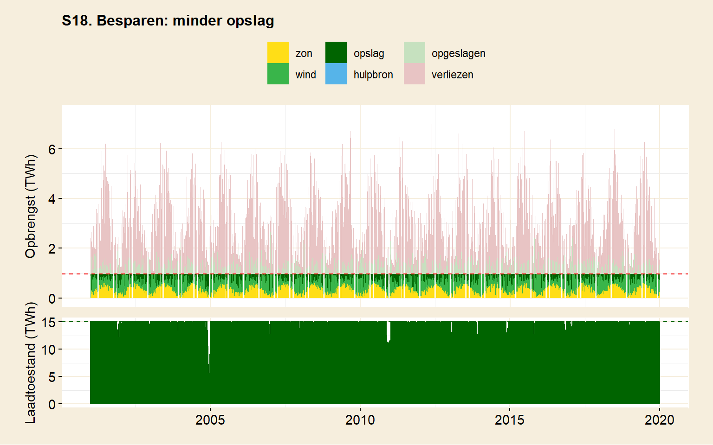
Vijfig procent besparen is natuurlijk veel. Niet-energetisch gebruik werd al buiten beschouwing gelaten. Dat waren voornamelijk grondstoffen die aan de basis staan van producten. Op lange termijn zullen die natuurlijk wel vervangen moeten worden. Om toekomstbestendig te zijn, zouden die eigenlijk moeten worden meegerekend. De voorgestelde bezuiniging komt hier nogeens bovenop.
De simulatie laat zien dat besparen een groot effect heeft op de benodigde hoeveelheid opslag. Het halveren van het energiegebruik vermindert de opslagbehoefte met een factor tien. De opslag kan een orde van grootte kleiner. Wel is het effect van de bezuiningen volgens het model nog steeds onvoldoende om energieopslag in accu’s plausibel te maken. Dat zou het gebruik van een elektrisch wagenpark zinvol maken, maar de benodigde capaciteit is daarvoor ruimschoots te groot.
Besparingen kunnen ook gebruikt worden om het areaal aan zonnecellen en windmolens te beperken. Kleiner ruimtegebruik heeft als voordeel dat de implementatie makkelijker wordt. Het vermindert bijvoorbeeld het overleg met belanghebbenden die medewerking moeten verlenen om molens of zonnecellen geplaatst te krijgen.
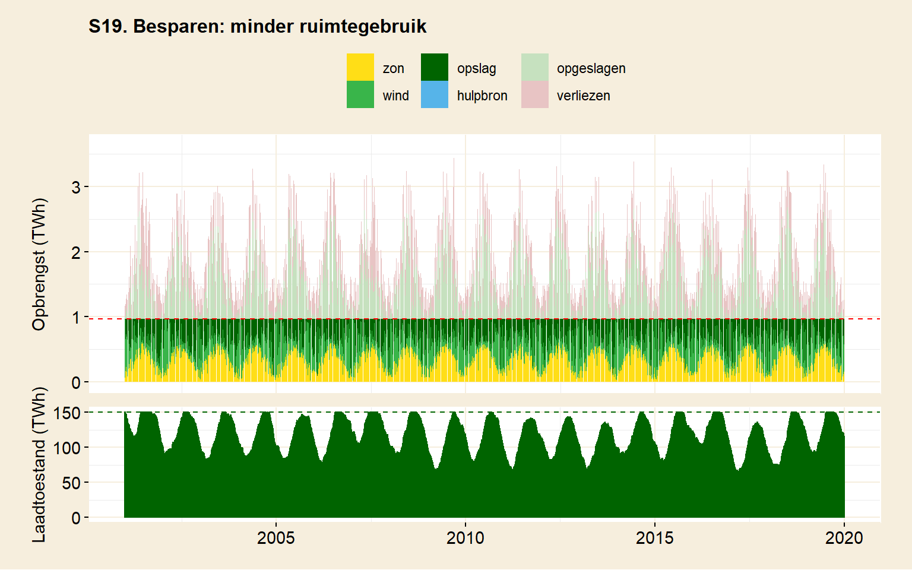
Scenario 19 bezuinigt wederom 50% op ons energieverbruik. Ditmaal blijft de hoeveelheid opslag constant ten opzichte van scenario 10. Nu gaat de hoeveelheid zonne- en windenergie worden gevarieerd.
| S10. Waterstof lange termijn | S18. Besparen: minder opslag | S19. Besparen: minder ruimtegebruik | S20. Besparen: 25% minder | |
| Verbruik | ||||
| Jaarverbruik | 706 TWh | 353 TWh | 353 TWh | 530 TWh |
| Aan waterstof | 25 % | 25 % | 25 % | 25 % |
| Aan elektriciteit | 75 % | 75 % | 75 % | 75 % |
| Ruimtegebruik | ||||
| Oppervlakte zon | 8 % NL | 8 % NL | 4 % NL | 8 % NL |
| Oppervlakte wind | 52 % NL | 52 % NL | 21 % NL | 52 % NL |
| Capaciteit | ||||
| Zon | 100 % | 200 % | 100 % | 133 % |
| Wind | 50 % | 101 % | 40 % | 67 % |
| Hulpbron | 0 % | 0 % | 0 % | 0 % |
| Opslag | 150 TWh | 15 TWh | 150 TWh | 60 TWh |
| Levering | ||||
| Zon | 33 % | 35 % | 34 % | 34 % |
| Wind | 37 % | 47 % | 32 % | 41 % |
| Hulpbron | 0 % | 0 % | 0 % | 0 % |
| Opslag | 30 % | 18 % | 34 % | 24 % |
| Verliezen | ||||
| Onbenut zon & wind | 17 % | 178 % | 4 % | 72 % |
| Omzettingsverliezen | 33 % | 23 % | 37 % | 28 % |
| Draaitijd hulpbron | ||||
| Totale draaitijd | 0 % | 0 % | 0 % | 0 % |
| Draaitijd op > 90% verm. | 0 % | 0 % | 0 % | 0 % |
| Laadvermogen opslag | ||||
| Maximaal | 750 GW | 686 GW | 413 GW | 689 GW |
| Gemiddelde top 20% | 330 GW | 193 GW | 183 GW | 247 GW |
| Max. ontladen elektr. | 45 GW | 22.5 GW | 22.5 GW | 33.75 GW |
| Inventaris | ||||
| Hulpcentrales (3 GW) | 0 | 0 | 0 | 0 |
| Waterstoffabrieken (100 MW) | 3298 | 1931 | 1832 | 2472 |
| Waterstofcentrales (3 GW) | 20 | 10 | 10 | 15 |
| Periode | 2001 - 2019 | 2001 - 2019 | 2001 - 2019 | 2001 - 2019 |
| Voor een toelichting op de tabel, zie einde van dit hoofdstuk. | ||||
Het model kan in scenario 19 af met ongeveer de helft van de infrastructuur. De afname is lineair; lang niet zo groot als voor de opslagcapaciteit. Dat betekent dat besparen om oppervlakgebruik te verminderen wat minder zinvol is.
Tot slot is er in tabel 7 een scenario opgenomen waarin er iets minder drastisch wordt bespaard op ons energiegebruik. Scenario 20 simuleert een bezuiniging van 25%. De benodigde opslagcapaciteit kan vervolgens meer dan gehalveerd worden. De effectiviteit van kleinere besparingen neemt dus snel af.
5.4.9 Kan beperkte inzet van fossiele brandstoffen gebruikt worden om fluctuaties op te vangen, terwijl we wachten op innovatie?
Het opvangen van de fluctuaties in het aanbod van zonne- en windenergie door fossiele brandstofcentrales is interessant genoeg de situatie waarin Nederland zich nu bevindt. Het is duidelijk een overgangsscenario, tenminste als in de toekomst de energieproductie CO2-neutraal moet zijn. Maar misschien kan er worden gesmokkeld. Een beetje bijdraaien met fossiele brandstoffen is toch niet zo erg?
Groene energiebronnen worden op dit moment gebruikt om onze elektriciteitsbehoefte aan te vullen. In het hoofdstuk over verbruik werd duidelijk dat 8% van onze energie ‘groen’ wordt opgewekt. Het aandeel zon en wind komt niet verder dan 2,1%. Het overige deel kwam van het verbanden van biomassa. Er werd geconcludeerd dat het verbranden van biomassa geen toekomstbestendig groeipad biedt. Biomassa heeft een extreem lage energiedichtheid. (Dat is de reden dat de simulaties alleen uitgaan van zon en wind.) Als zon en wind in de toekomst de oplossing gaan bieden, dan ligt er dus nog een stevig groeipad voor de boeg. De capaciteit moet vervijftigvoudigd worden.
Op dit moment kan er nog niet volhartig worden gekozen voor een scenario waar (waterstof)opslag gebruikt wordt om vraag en aanbod op elkaar te laten aansluiten. De techniek voor opslag op de schaal waarop we dat nodig hebben, is nog niet voor handen (zie hoofdstuk opslag, i.c.m. de simulaties). Dat betekent dat er gewacht moet worden op innovaties. In het gunstigste geval blijken die inderdaad haalbaar en komen nieuwe oplossingen ‘snel’ beschikbaar. Er is ook een kans dat het langer duurt, en Nederland nog wel even vastzit aan fossiele brandstoffen. In de tussentijd moeten de fluctuaties veroorzaakt door een groeiend aandeel van zon en wind worden opgevangen, om uitval te voorkomen.
In het model worden fossiele brandstofcentrales gezien als hulpbron, net als kerncentrales. Aan een scenario met zon, wind en de beperkte inzet van kernenergie werd elders al gerekend. De resultaten zijn hier ook bruikbaar.
In een bezetting waarbij zon en wind in principe onze energiebehoefte zouden kunnen dekken, bleek een derde van de energiebehoefte toch uit centrales te komen (scenario 12). In scenario 13 werd uitgegaan van een extreme bezetting van windmolens en zonnecellen. Een kwart van Nederland werd gebruikt voor zonnecellen en anderhalf keer het oppervlak van Nederland voor windmolens. Hulpcentrales waren daar verantwoordelijk voor 13,5% van de vraag.
Volgens het model is het dus niet makkelijk om de hoeveelheid uitstoot te beperken. Alleen door een extreme hoeveelheid ruimte op te offeren kan de uitstoot worden gedecimeerd.
De hoeveelheid uitstoot uit fossiele brandstofcentrales wordt dus bepaald door hoeveel energie er moet worden bijgedraaid. Daarnaast is er de vraag hoeveel centrales daarvoor dan nodig zijn. Zijn er daar al voldoende van?
Uit scenario’s 12, 13 en 14 bleek dat kerncentrales 100% van de nationale energievraag op de schouders moeten kunnen nemen. Hetzelfde zou gelden voor energiecentrales die op fossiele brandstoffen werken. Het vermogen van bestaande energiecentrales komt in totaal neer op 25% van de Nederlandse energiebehoefte. Dat is op dit moment voldoende om het variabele deel van het aanbod (2,1% van het energieverbruik) op te vangen. Als het vermogen in wind en zon groeit, zullen er fossiele brandstofcentrales moeten worden bijgebouwd. Dat zal het geval zijn als wind en zon meer dan 25% van de energiebehoefte gaan leveren. Bij een voltooide energietransitie moeten er zelfs drie keer meer centrales worden bijgebouwd dan er nu staan.
Het moeten bijbouwen van centrales zou geen gunstige ontwikkeling zijn. Dat vormt een uitbreiding in fossiel, in plaats van een teruggang. Uiteindelijk zal men van de centrales afwillen. Wie wil er investeren in centrales die na voltooiing van de energietransitie weer moeten worden afgebroken? Dat geldt temeer als de energielevering uit deze centrales beperkt blijft (en dat is het doel). Er valt dan weinig te verdienen aan centrales die straks weer moeten worden afgebroken. Dat bemoeilijkt commerciële exploitatie.
5.4.10 Tabeltoelichting
Verbruik. Jaarverbruik: het totale energieverbruik in een gesimuleerd jaar. Indien meer dan een jaar wordt gesimuleerd is dit jaarverbruik het gemiddelde over de gehele periode. Aan waterstof: aandeel van het totale verbruik dat wordt afgenomen in de vorm van waterstof. Aan elektriciteit: idem, maar voor elektriciteit.
Ruimtegebruik. Oppervlakte zon: het totale oppervlak aan zonnecellen waarvan de simulatie uitgaat. Zonnecellen zijn aaneensluitend geplaatst. Oppervlakte wind: het totale oppervlak dat nodig is om windmolens te plaatsen, op basis van de gesimuleerd Enercon-126. De molens staan dan bijna 900m uit elkaar en zijn 200m hoog.
Capaciteit. Zon: De hoeveelheid energie die in een jaar door zon kan worden opgewekt, tov het totaalverbruik. Voorbeeld: is de capaciteit 50% en het jaarverbruik 706 TWh, dan wekt de zon in een jaar 353 TWh aan energie op. Niet alle energie die wordt geproduceerd, wordt echter ook daadwerkelijk geleverd en gebruikt. Er kan bijvoorbeld teveel aan zonne-energie zijn en het surplus kan verloren gaan. Deze post geeft dus de potentie van zonne-energie weer. Indien meer dan een jaar wordt gesimuleerd, wordt de gemiddelde jaarlijkse potentiële capaciteit over de gehele periode weergegeven. Wind: idem. Hulpbron: de totale potentiële hoeveelheid energie die de hulpbron over een jaar kan leveren. Als de capaciteit 100% is, dan zou de hulpbron in potentie in een jaar 706 TWh (het jaarverbruik) hebben kunnen leveren, als deze bron continu zou worden gebruikt. Om een grotere capaciteit te kunnen leveren, zijn in de praktijk meer energiecentrales (hulpbronnen) nodig. Opslag: De capaciteit, in TWh ditmaal, van de in de simulatie gebruikte opslag. Deel deze waarde door het jaarverbruik om een percentage te verkrijgen, zoals voor de overige posten werd gebruikt.
Levering. Zon: De hoeveelheid energie in een jaar, ten opzichte van het totaalverbruik, die door zon direct aan afnemers van energie werd geleverd. (Energie uit zon kan ook zijn opgeslagen, of verloren zijn gegaan.) Indien meer dan een jaar wordt gesimuleerd, geeft dit het jaargemiddelde aan. Wind: idem. Hulpbron: De hoeveelheid energie t.o.v. het totaalverbruik dat door de hulpbron in totaal in een jaar werd geleverd. Opslag: De hoeveelheid energie t.o.v. het totaalverbruik dat door de opslag in totaal in een jaar werd geleverd.
Verliezen. Onbenut: de hoeveelheid energie, geproduceerd door variabele bronnen (zon en wind) die niet direct kon worden geleverd aan afnemers, òf kon worden opgeslagen. Dit gebeurt als de opslag vol zit, of er geen opslag wordt gebruikt. Omzettingsverliezen: diverse verliezen die worden gemaakt in omzettingsprocessen. Voorbeeld: bij elektriciteitsproductie door verbanding van waterstof gaat 50% van de potentiële energie in de waterstof verloren.
Draaitijd hulpbron. Totale draaitijd: de totale tijd dat een hulpbron actief was. Dit geeft de tijd aan waar de hulpbron nodig was om bij te springen tijdens energietekorten. In deze post wordt niet gekeken naar het geleverde vermogen. Draaitijd op > 90% verm.: De totale draaitijd van de hulpbron om meer dan 90% vermogen. Dit geeft een benadering voor ‘de hulpbron wordt gebruikt op vol vermogen’. Dit gebeurt typisch bij (vrijwel) compleet gebrek aan zon of wind.
Laadvermogen. Maximaal: Het maximum laadvermogen dat de opslag te verwerken kreeg. Dit getal heeft zijn weerslag op de benodigde hoeveelheid infrastructuur die de opslag nodig heeft. Gemiddelde top 20%: Het gemiddelde laadvermogen van de top 20% aan perioden van 10 minuten. Dit getal geeft een conservatieve schatting voor ‘maximaal laadvermogen opslag’. Max ontladen elektr.: Dit is het maximale vermogen waarmee de opslag werd ontladen. Dat heeft zijn weerslag op de hoeveelheid infrastructuur die nodig is. Voorbeeld: bij verbranding van waterstof om elektriciteit te maken in het geval van een waterstofopslag, bepaald dit de hoeveelheid waterstofcentrales die benodigd zijn.
Inventaris. Hulpcentrales: Het aantal hulpcentrales van 3 GW dat in de simulatie nodig is. Waterstoffabrieken: Het aantal waterstoffabrieken van 100 MW dat nodig is om het aanbod van elektriciteit in de simulatie om te zetten in waterstof. (Een waterstoffabriek van 100 MW is nu nog toekomstmuziek, de grootste ter wereld telt 20 MW.) Waterstofcentrales: Het aantal waterstofverbrandingscentrales dat in de simulatie nodig is om waterstof uit de opslag om te zetten in elektriciteit.